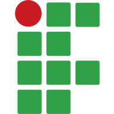

Início
Cardápio
Pedido
Fale Conosco
✖
Equipe de Desenvolvimento
Matheus L. Paganella
Front-end — Página do Usuário
Gabriel Athaydes
Front-end — Página Administrativa
Marcelli Masson
Front-end — Página do Usuário
Murilo Nunes
Front-end — Página Administrativa
João Augusto Crestani
Front-end — Página Administrativa e Usuário
Rafael Cunha
Orientador — Full Stack
Projeto desenvolvido para a Cantina Jean 🚀